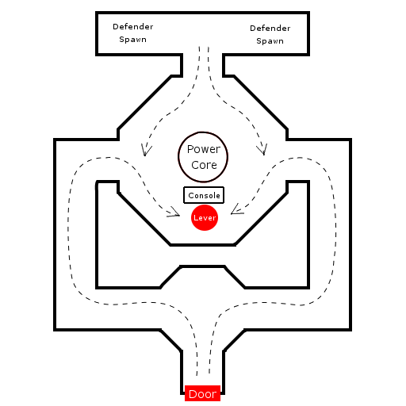

Assault Mapping Tutorial/Continuing The Assault
This page is a section of the Assault Mapping Tutorial. If you have arrived here from some other place, this page will likely make more sense if you start at the above link and read the tutorial through from beginning to end.
Previous Section: /Attacking and Defending
Next Section: /Other Objectives
Continuing the Assault
So now we have a pretty complete first objective, including reasonably sophisticated bot attacking and defending behaviors, objective warnings, and all that good stuff. The attackers come over the hill, they fight their way through the opposition, eventually blow up the door, and then proceed triumphantly through the doorway and ...off the edge of the world. Hmm.. Looks like it's time to build the rest of our map, huh?
The next logical objective from our backstory is for our heroes to proceed into the depths of the base, presumably navigate through a few hallways, and find themselves at the power core, which they will then need to trigger to overload somehow. As mentioned before, it can add some interest and strategy to a game when there's more than one way to reach an objective, so let's build our base symmetrically, with a path on either side leading to a central chamber for the power core.
From my planning stage, I've already done some thinking about the rest of the assault, and so it happens I've already made a sketch for this stage of things as well, which looks something like this:

|
Note here that I've planned things so that the defenders will start out behind the objective and need to come forward past it to meet the attackers. This is often a good idea for a couple of reasons:
- It reduces the likelihood that defenders who aren't intimately familiar with the map will get confused about what's where and which direction they should be heading: There's only one way to go, and it takes you to both the objective and the direction the attackers are coming from.
- It keeps the defender spawn point out of the middle of the combat. This both means that defenders probably won't spawn right on top of a rocket blast, and also means that attackers don't have the problem of that guy they just killed suddenly respawning behind them and blowing them away.
- It makes some logical sense (and things that make sense always make a level more intuitive to play). Defenders are going to be coming out from the deeper levels of things to meet the attack, they don't suddenly appear in the middle of attacker-held territory.
Again, I'm not going to bore you with a lot of basic mapbuilding details here. Let's just assume we've built this part of the map for now, and we've got a few hallways leading to a central room with a power core:
![[astut-inside]](images/astut-inside.jpeg) |
Adding a HoldObjective
Ok, so we've got a power core, and some routes to it, now we need something to do when the attackers get there. For this part of things, we'll use a different kind of objective known as a HoldObjective. As the name implies, a HoldObjective is simply one that an attacker must touch and "hold" (by continuing to touch it) for a certain amount of time in order to complete it (the most common way that HoldObjectives are represented in Assault maps is as levers that need to be pulled).
We'll set up some sort of a console in front of the power core which the attackers will need to get to long enough to do whatever one does to start an overload in a power core. Start by adding a Static Mesh for a console (something like, say, AlleriaHardware.Miscellaneous.pConsoleA01AL) a little bit in front of the power core (if you're using that console mesh, you'll need something for the back of it too. I used AlleriaHardware.Miscellaneous.RingCon01AL for that).
Now we need the actual objective. Add an Actor>>NavigationPoint>>JumpDest>>JumpSpot>>GameObjective>>ProximityObjective>>HoldObjective to the map, and place it right in front of the console we just placed. This is where we'll want people to stand to trigger the objective. Make sure it's placed so that its collision cylinder is resting on the ground (this will ensure that the objective effects show up in the right place). Since the HoldObjective just shows up as an icon in the editor, to do this part of things, it often helps to select [Radii View]? in the 3D viewport to get an idea of what the collision cylinder for the HoldObjective is. Next, open the HoldObjective's properties window, and set the following properties:
- Events→Tag = CoreObjective
- Events→Event = CoreObjectiveCompleted
- GameObjective→ObjectiveName = the Power Core
- GameObjective→LocationPrefix = Near
- GameObjective→LocationPostfix =
- GameObjective→Score = 10
- Assault→DrawDistThresHold = 0
- Assault→Objective_Info_Attacker = Trigger an Overload in the Power Core
- Assault→Objective_Info_Defender = Defend the Power Core
- Assault→ObjectiveDescription = Flip the Lever to Trigger an Overload
- GameObjective→DestructionMessage = Power Core Overload Sequence Activated!
(For those who don't remember, all of the above properties are explained in /Creating a Destroyable Objective) There are also a couple of additional properties specific to HoldObjectives which you'll want to set:
- HoldObjective→bLocationFX = True
- This will cause the HoldObjective to display a flashing indicator where it's located in the map indicating that players should "stand here".
- ProximityObjective→ConstraintPawnClass = UnrealPawn
- (this is the default) This specifies what type of actor something has to be in order to trigger this HoldObjective. The default will match any UnrealPawn (which basically means any player or bot in any form). For some types of objectives (such as vehicle-based ones), you may want to narrow this to a more specific class of actor.
Now, all HoldObjectives need to be associated with a mover of some kind. It's actually the movement and position of this mover which determines how close to "completed" the objective is (when the mover reaches its end point, the objective has been accomplished). For simplicity, we'll just create a lever which needs to be flipped, and associate that mover with our HoldObjective, so create a mover using the Rahnem_Glacier.Base.plunger static mesh, and place it so that it looks like it's attached to the console next to where we put the HoldObjective. For keyframe 0, rotate it appropriately so it looks like it's in the flipped-up position. Now set it to keyframe 1, and rotate it so that it's in the flipped-down position (if you're having a bit of trouble with the rotations here, try setting Roll and Yaw both to -16384, and use Pitch to adjust the lever angle). There, now we have a flippable lever and a HoldObjective, we just need to tie them together.
Go into the HoldObjective's properties, and set the following properties:
- HoldObjective→MoverTag = CoreObjectiveLever
Now, go into the new mover's properties, and set the following properties:
- Events→Tag = CoreObjectiveLever
- Events→Event = CoreObjective
- Object→InitialState = TriggerAdvance
- Mover→MoverEncroachType = ME_IgnoreWhenEncroach
- Mover→MoveTime = The time you want the hold objective to 'last' for
There. Now, what will happen is this:
- When somebody stands on the HoldObjective, it will send a trigger event to its HoldObjective→MoverTag, which in this case is our CoreObjectiveLever.
- The lever is set to TriggerAdvance, which means it will start moving when it's triggered, and stop moving when it's untriggered.
- If whoever's standing on the HoldObjective stops standing on it, it will send an untrigger event to the lever, which will cause it to stop moving.
- Once the lever reaches the end of its movement, it will trigger its Events→Event, which is set to the tag value for our HoldObjective.
- When the HoldObjective gets triggered, it will consider itself "completed" and deactivate itself, accomplishing the goal.
- When the HoldObjective is completed (after the time set in Mover→MoveTime), in addition to deactivating itself as an objective, it will also trigger its own Events→Event, which in this case is set to CoreObjectiveCompleted. You can use this event (in a ScriptedTrigger or elsewhere) to have things happen when this objective has been completed.
- Throughout the whole process, the HUD indicators for the objective which show how close to "completed" it is will all look at the position of the HoldObjective→MoverTag mover to see how far it is through its movement, and draw that as a percent-completed in all the indicators.
There's only one little factor left: How do we set how long somebody has to stand on the objective to complete it? Remember what I said earlier: It's the movement of the mover which determines how "complete" the objective is, so to determine how long it takes to complete the objective, all we need to do is change how long it takes the mover to do its movement. Go into the lever's properties, and set its Mover→MoveTime to something appropriate, like say 5. This will make it so that the attackers have to stand on the HoldObjective for a total amount of 5 seconds before it will be completed (I know it doesn't sound like much, but 5 seconds can be a long time when you're being shot at from all sides)
Objective Ordering
Now that we have more than one objective in our map, it's important to talk for a minute about objective ordering. The game does most of the hard work of objective management for you by automatically progressing from one objective to the next as goals are accomplished by the attackers, but how does it know which objective is "first", and then which is "next"?
As it turns out, this is all handled by the GameObjective→DefensePriority property. All of the GameObjectives in a given level are ordered in descending DefensePriority. That means that the GameObjective with the highest DefensePriority value is the first objective of the assault, and the one with the lowest DefensePriority is the last one.
This may seem counterintuitive at first, because one would expect the objectives to be numbered in the order they're completed, but think of it this way: At any point in time, all of the defenders look at all of the active objectives and try to decide which one is the most important one for them to defend. Obviously, the most important objective to defend is the first one, which the attackers are going to be reaching first, so that objective should have the highest DefensePriority. If they succeed in defending the first (most important) objective, then they don't need to worry about any of the others. If they fail to defend that objective and it falls, then they will need to fall back to the next most important one and try to defend that instead. Based on this logic, the first objective should have the highest DefensePriority, and the last one the lowest. Because of this, the game also treats the objectives this way when displaying them on the HUD and deciding what the attackers should be going for as well.
Note that it's also possible (and perfectly legal) to give two objectives the same DefensePriority. What this does is cause both objectives to be the current objective at the same time, and both will need to be completed before moving on to the next objective. An example of this is the shield generators in AS-RobotFactory or the ion generator switches in AS-Glacier. Also note that it doesn't really matter what values you use for DefensePriority, what matters is simply whether one objective's value is higher or lower than another one's.
So, every time you add a new GameObjective, it's a good idea to check all of your DefensePriority settings to make sure they're in the right order. For our little map here, let's set our new HoldObjective's DefensePriority to 0 and set our earlier door objective's DefensePriority to 1.
PlayerStart Management
Ok, everything's all set up for our second objective, and after the door gets blown up, the new HoldObjective becomes the next target for the attackers automatically. There's still a problem, though: The defenders are still spawning on the roof, even though they've failed to defend the door, and the attackers are still spawning way back at the beginning, which makes for a long run to get to the power core. We want to have the spawn points change when the door gets destroyed to reflect the progress that the attackers have made.
The first thing we'll need to do, obviously, is to set up some new PlayerStarts for the defenders back behind the power core. As before, we've got a fair amount of room, so let's put down 16 of them (8 on each side of the hallway). Now make sure all of these new PlayerStarts have a TeamNumber of 2, to make them a new group which is separate from either of the previous groups (0 and 1). (While we're here, you might want to put down a couple of WeaponLockers too, so the defenders have something to shoot with. (Choice of weapons is left as an exercise for the reader  ))
))
Next, we need a PlayerSpawnManager for this new group of PlayerStarts. Add an Actor>>Info>>PlayerSpawnManager near the PlayerStarts, and set the following properties:
- PlayerSpawnManager→AssaultTeam = EPSM_Defenders
- PlayerSpawnManager→bEnabled = False
- PlayerSpawnManager→PlayerStartTeam = 2
Note that we set this one to bEnabled = False. This is because we don't want this group of PlayerStarts to be active at the start of the game, we only want people to start spawning here once the door has been destroyed and we activate this group. There is one more property we want to set as well:
- PlayerSpawnManager→bAllowTeleporting = True
This property indicates that when this group of PlayerStarts becomes active, players will be able to hit the 'Q' key to instantly teleport to the new spawn point, so they don't have to run back from wherever they are to get close to the new objective, which can be very handy and is something you'll usually want to set.
Ok, now we've got the new PlayerSpawn area set up, how do we activate it? You remember that ScriptedTrigger we set up to generate the explosion when the door blew up? Well, we can use it for more than just explosions. First, though, we'll need to give our PlayerSpawnManagers some distinctive tags so we can refer to them in the script. Go to the new PlayerSpawnManager we just created and set its Events→Tag to something appropriate, like "DefenderSpawnCore". Now go to the original defender PlayerSpawnManager on top of the roof and set its Events→Tag to "DefenderSpawnDoor".
Now go back to the ScriptedTrigger for the door and open its properties. Go to the AIScript→Actions property, and add a couple more inline objects to the end:
- ACTION_ASSetPlayerSpawnArea
- PlayerSpawnManagerTag = DefenderSpawnCore
- bEnabled = True
- ACTION_ASSetPlayerSpawnArea
- PlayerSpawnManagerTag = DefenderSpawnDoor
- bEnabled = False
Now once the door gets blown up, the ScriptedTrigger will automatically enable the new spawn point for the defenders, and disable the old one. Now what about the Attackers?
Well, we could set up some new PlayerStarts for them too, maybe somewhere near the door... but wait, we've already got some PlayerStarts near the door (the ones the defenders were using). Too bad we can't just re-use those for the attackers now, right? Well, as it happens we can. In fact, all we have to do is create a new PlayerSpawnManager, and set it up as follows:
- PlayerSpawnManager→AssaultTeam = EPSM_Attackers
- PlayerSpawnManager→bEnabled = False
- PlayerSpawnManager→PlayerStartTeam = 1
- PlayerSpawnManager→bAllowTeleporting = True
Note that the PlayerStartTeam is set to 1, which means this PlayerSpawnManager uses the same PlayerStarts as the defender PlayerSpawnManager we created originally. This doesn't cause a problem because, as with the previous one we just set up, this PlayerSpawnManager is set bEnabled = False, which means we won't get attackers and defenders both spawning here as soon as the game starts. However, now that we have this PlayerSpawnManager set up, this means we can turn on the ability for attackers to spawn here later, when it's appropriate (after we've deactivated the defender PlayerSpawnManager which was using this group).
The only thing that's left is to set up the ScriptedTrigger to change the attacker PlayerSpawnManagers the same as we did for the defenders. Again, we're going to need our PlayerSpawnManagers to have tag names, so set Events→Tag on the new one we just created to be "AttackerSpwanCore", and go back to the old one and set its Events→Tag to "AttackerSpawnDoor". Now in the ScriptedTrigger's AIScript-Actions property, add the following entries to the end of the list:
- ACTION_ASSetPlayerSpawnArea
- PlayerSpawnManagerTag = AttackerSpawnCore
- bEnabled = True
- ACTION_ASSetPlayerSpawnArea
- PlayerSpawnManagerTag = AttackerSpawnDoor
- bEnabled = False
There we go! Now when the first objective is completed, the defenders will automatically fall back to their new spawn point inside the base, and the attackers will be able to start spawning on top of the roof so they won't have to run as far to get inside.
Critical Objective Volumes, Bot Pathing, Etc.
Setting up bot pathing and ASCriticalObjectiveVolumes and such is pretty much all the same for this objective as it was for our previous one. It is important to note, however, that critical objective volumes are particularly important for HoldObjectives, because unlike DestroyableObjectives which sound their alert as soon as somebody hits them (from a distance), the first warning you'll get by default from a HoldObjective is when the attacker is already right on top of it, which in many cases is too late to do a lot.
Also, when pathing the second part of our map here, it is worth noting that we will need to add an Actor>>NavigationPoint>>BlockedPath at the outer door to tell bots that they can't go that way initially (because the door is there). Once you've placed the BlockedPath actor (and done whatever you need to to make it fit into the bot path network the way you want), set its Events→Tag to something appropriate (say, "DoorPath"), and then go to the ScriptedTrigger's AIScript→Actions property again and add another action:
- Action_TRIGGEREVENT
- Event = DoorPath
Thus, when the door gets destroyed, in addition to showing the explosion and rearranging the spawn points, it will also unblock the path through the door so the bots know they can go that way now.
Ending the Round
So now we've got our whole (short) assault put together. The attackers come around the valley, blow up the door, infiltrate the base, make their way to the power core, and set it to overload, and they win! But wait, something's wrong here: They don't actually win. Sure, all the objectives get completed, but then the game just keeps going until the timer finishes counting down, with nothing left for anybody to accomplish. We need to make the game end the round when the last objective is completed, so that the attackers can celebrate their success, and the defenders will get a try at things.
In Assault, ending the round is accomplished using a Trigger_ASRoundEnd? actor. One of the last things we need to do before this map will be complete, therefore, is to add an Actor>>Triggers>>Trigger_ASRoundEnd to the map. It doesn't really matter where you put it, but it's generally a good idea to put it somewhere near the last objective so it's easy to find later. The Trigger_ASRoundEnd actor is very easy to use. Simply set its Events→Tag property to some appropriate name (I usually use something obvious like "RoundEnd"), and then set that event up to be triggered when the last objective is completed (you can either do this by just setting that name in the last objective's Events→Event property or, assuming you want to have other things (explosions, etc) happen when the objective is completed, simply add an Action_TRIGGEREVENT action to the appropriate ScriptedTrigger to trigger the "RoundEnd" event along with everything else).
There's just one other little detail left, which you may have noticed. When the round ends, the default behavior for the game is to switch to a camera view of the current objective, which you can rotate around. Often, however, the default ending view for an objective isn't in the right place, or doesn't show the best scene, and you might wish to change it. In fact, when the game ends while people are still attacking the base door, the default view in our map isn't really ideal, so let's change that. Here's how we go about it:
First, we need to set up an ASCinematic_Camera? to indicate where the view should be located and what it should be pointing at. To do this, add an Actor>>ASCinematic_Camera to the map where you would like it, and rotate it appropriately. An easy way to get the placement and rotation the way you'd like it is to position your 3D view in the editor the way you want the camera's view to be, then find your editor camera (the little eye icon) in one of the 2D views, right-click on it, and bring up its properties. Note down the Movement→Location and Movement→Rotation values, and then when you create your ASCinematic_Camera, simply type in those same values for it.
Now to associate it with the game objective. Go into the ASCinematic_Camera's properties and set its Events→Tag to some appropriate value such as, say, BaseDoorCamera. Now open up the properties for our base door DestroyableObjective_SM, and set its Assault→EndCameraTag to the same value. Now whenever the round ends while the base door is the active objective, it will show a view from our new camera position instead of the default.
Proceed to the next section: /Other Objectives
This tutorial was originally written and contributed to the Wiki community by Foogod. Questions and comments are welcome! Please either leave them on my personal page or at the bottom of the relevant tutorial page. If you see something which is wrong or unclear and you think needs some correction, please feel free to edit the text directly (that's what the Wiki is for!), but please try to keep the tutorial flow intact (no thread discussions in the middle of the tutorial text, please).
Note: To reduce clutter, comments on the tutorial pages will be periodically moved to the /Discussion page. Look there for older comments and thread discussions.